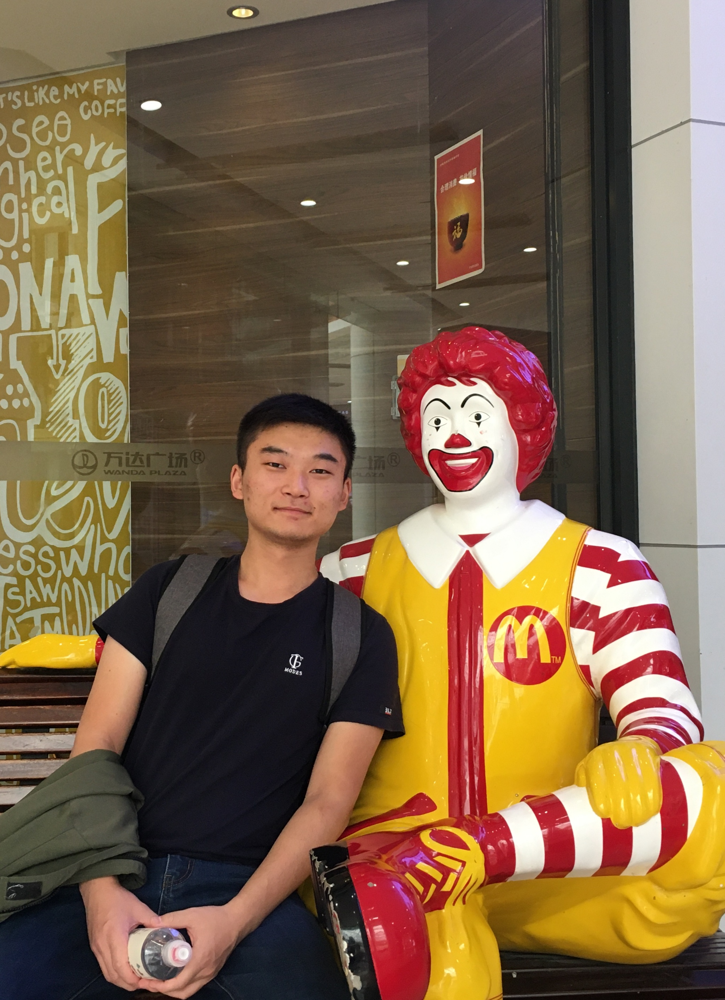
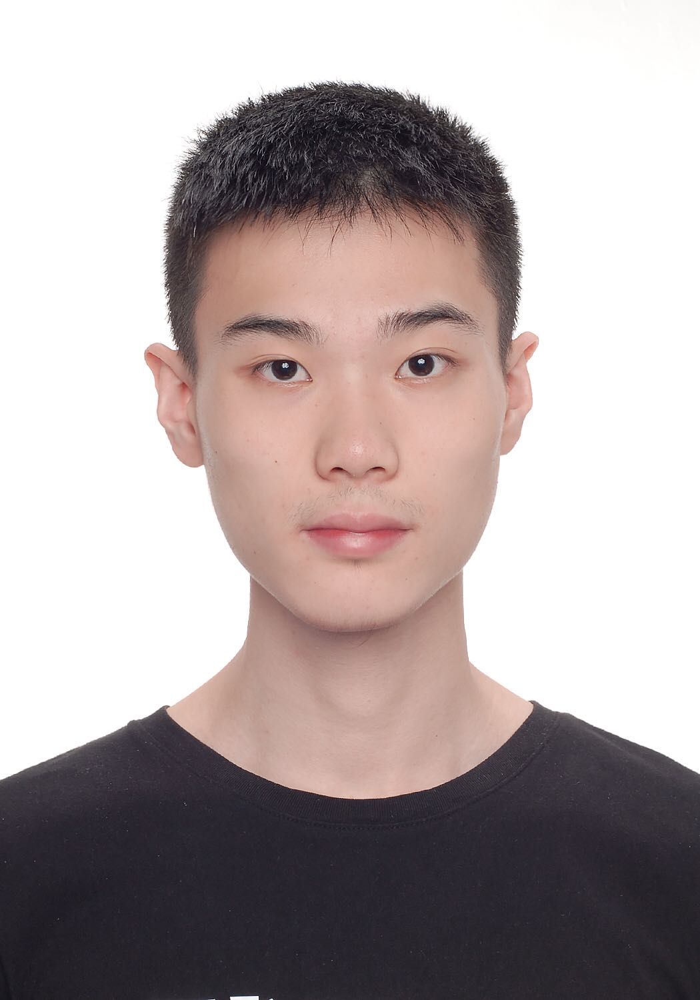

Team Members
Xu Lu (路旭)

Xu Lu is a Master student in Shanghai Jiao Tong University. His research interests include operating systems, virtualization and HW/SW co-design. Currently, he is focusing on trust execution environment and RISC-V processor.
- Master student
- Institute of Parallel And Distributed Systems
- School of Software
- Shanghai Jiao Tong University
- 3402, Software Building, 800 Dongchuan Rd., Shanghai, China
- Zip/Postal Code: 200240
- Email: LuXuKun at sjtu dot edu dot cn
- Home page
Bicheng Yang (杨璧丞)
Bicheng Yang is a postgraduate student in Shanghai Jiao Tong University. His research interests include operating systems, virtualization and TEE. He has participated in several systems including cloud-computing, RISC-V TEE.
- First-year postgraduate student
- Institute of Parallel And Distributed Systems
- School of Software
- Shanghai Jiao Tong University
- 3401, Software Building, 800 Dongchuan Rd., Shanghai, China
- Zip/Postal Code: 200240
- Email: Bichengyang at sjtu dot edu dot cn
Erhu Feng (冯二虎)

Erhu Fengis a undergraduate student in Shanghai Jiao Tong University. His research interests include operating systems, virtualization and TEE. He has participated in several systems including cloud-computing, RISC-V TEE.
- Fourth-year undergraduate student
- Institute of Parallel And Distributed Systems
- School of Software ·- Shanghai Jiao Tong University
- 3402, Software Building, 800 Dongchuan Rd., Shanghai, China
- Zip/Postal Code: 200240
- Email: fengerhu1 at sjtu dot edu dot cn
Jinyu Gu (古金宇)
Jinyu Gu is a PhD student at Shanghai Jiao Tong University. His research interests include TEE, operating systems and virtualization.
- Fourth-year Ph.D student
- Institute of Parallel And Distributed Systems
- School of Software, Shanghai Jiao Tong University
- 3402, Software Building, 800 Dongchuan Rd., Shanghai, China
- Zip/Postal Code: 200240
- Email: gujinyu at sjtu dot edu dot cn
- Home page
Dong Du (杜东)

Dong Du is a PhD student @ Shanghai Jiao Tong University. His research interests include operating systems, virtualization and HW/SW co-design. He has built several systems including OS, compiler, and RISC-V processor (XPC on RISC-V).
- Third-year Ph.D student
- Institute of Parallel And Distributed Systems
- School of Software
- Shanghai Jiao Tong University
- 3402, Software Building, 800 Dongchuan Rd., Shanghai, China
- Zip/Postal Code: 200240
- Email: Dd_nirvana at sjtu dot edu dot cn
- Home page
Yubin Xia (夏虞斌)

Yubin Xia is an associate professor in Shanghai Jiao Tong University. His research interests include operating systems, system virtualization, computer architecture. Currently, He is focusing on building new system software that are suitable for isolation in new execution environments, like TEE, VM, enclave, etc.
- Associate Professor
- Institute of Parallel And Distributed Systems
- School of Software
- Shanghai Jiao Tong University
- 3401, Software Building, 800 Dongchuan Rd., Shanghai, China
- Zip/Postal Code: 200240
- Email: xiayubin at sjtu dot edu dot cn
- Home page